THE CASTLEVANIA ARCHIVE
Explore the history of Castlevania — its games, heroes, monsters, castles, legends and stories.
The archive separates the series' release history from its fictional chronology, allowing every important game to be preserved without confusing release order with story order.
RELEASE ORDER
THE GAMES AS THEY WERE RELEASED
This catalogue follows the history of the Castlevania games by original release. Games do not have to belong to the main fictional timeline to appear here.
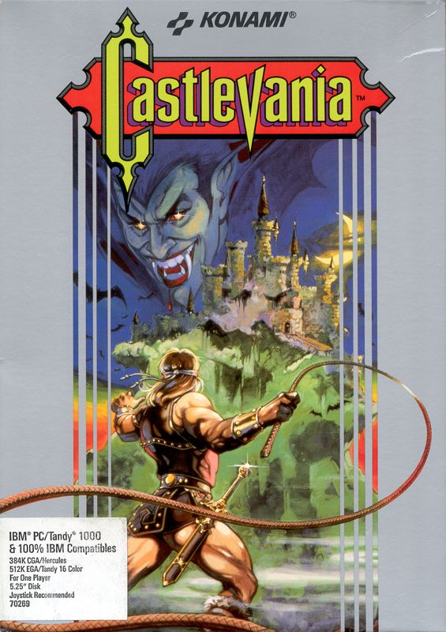
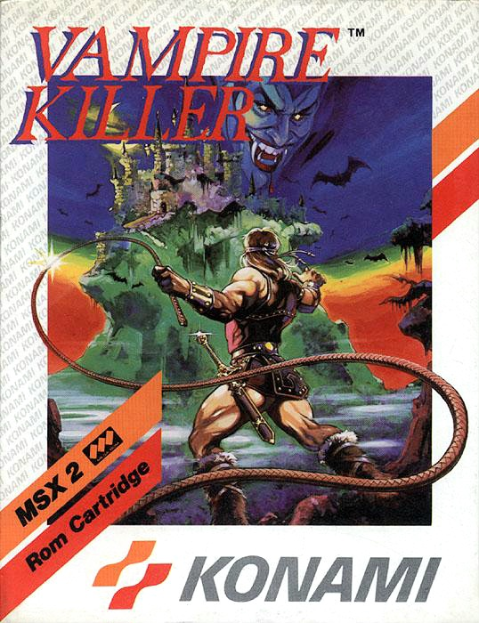
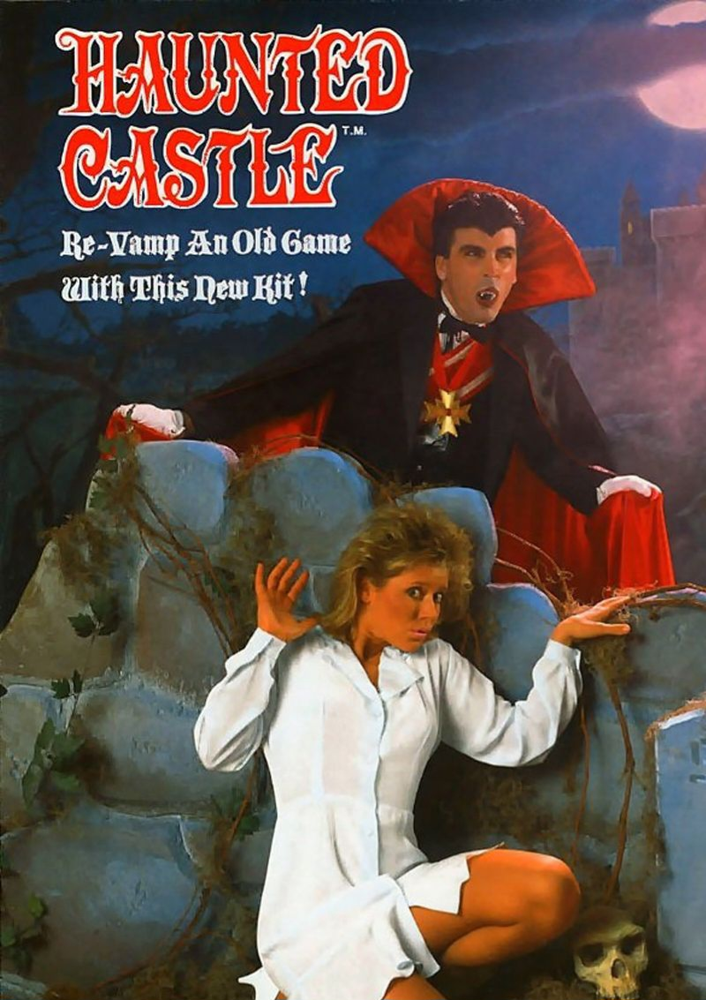
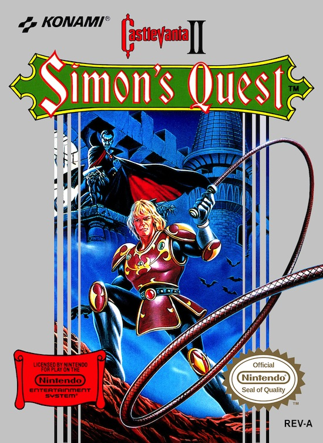
Simon's Quest
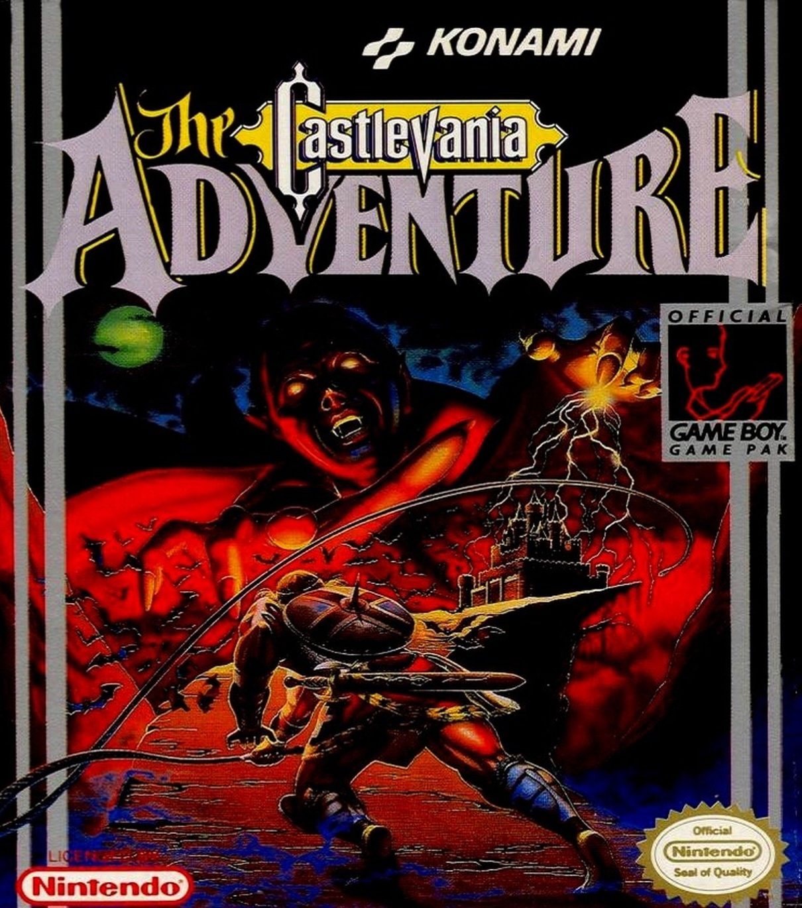
The Adventure
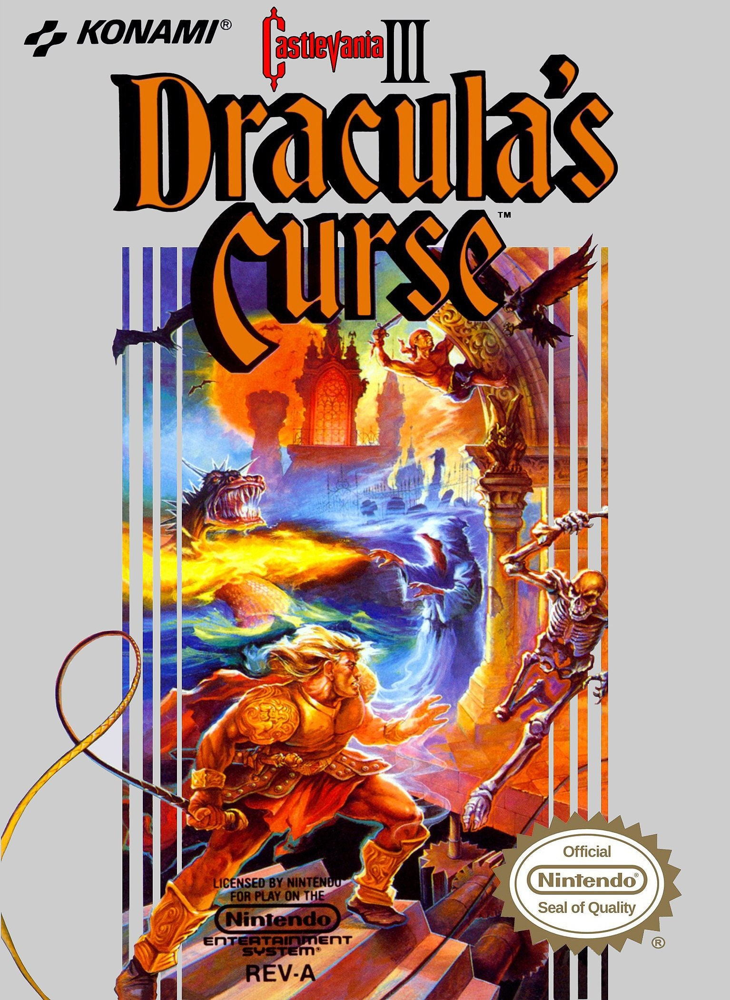
Dracula's Curse
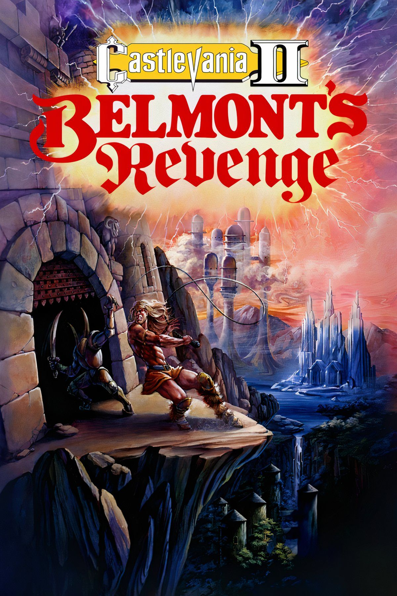
Belmont's Revenge
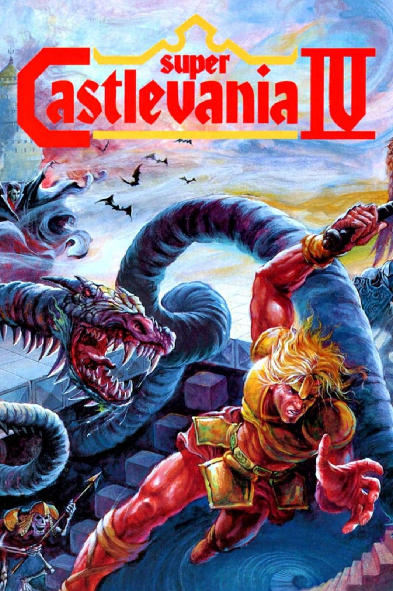

Rondo of Blood

X68000

Bloodlines
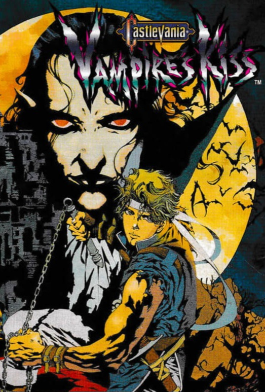
Dracula X
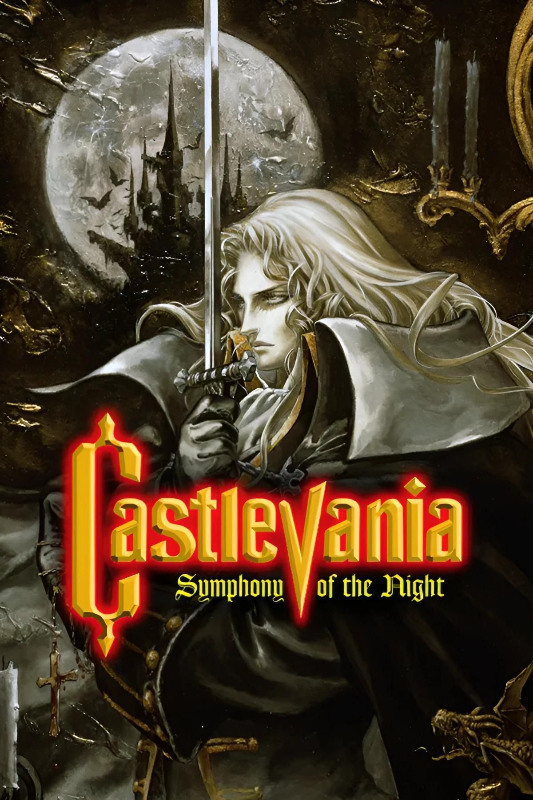
Symphony of the Night
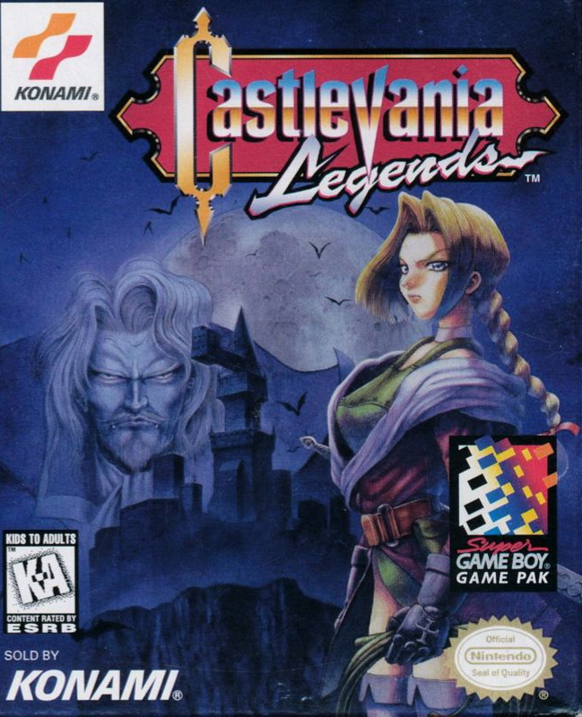
Legends


Legacy of Darkness

Circle of the Moon

Chronicles
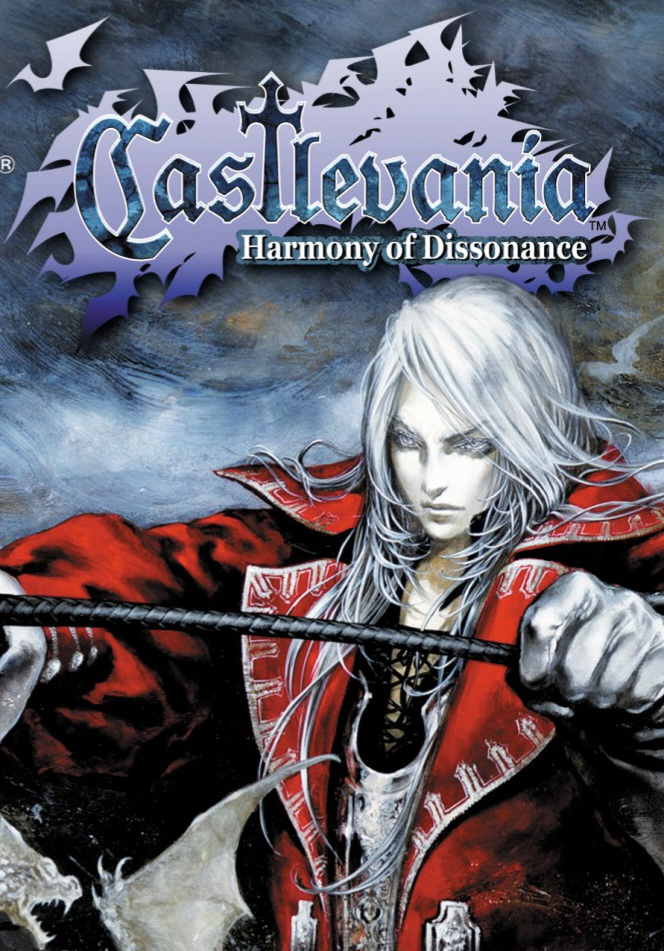
Harmony of Dissonance
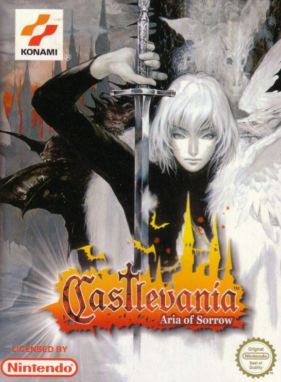
Aria of Sorrow

Lament of Innocence
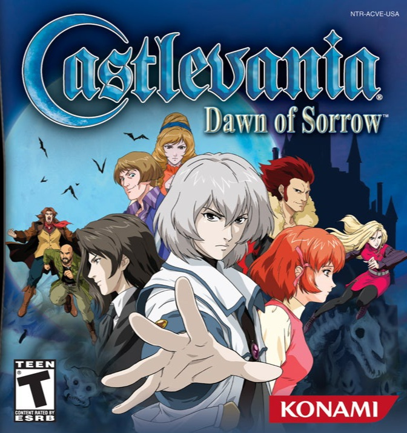
Dawn of Sorrow

Curse of Darkness

Portrait of Ruin

Order of Shadows

The Dracula X Chronicles
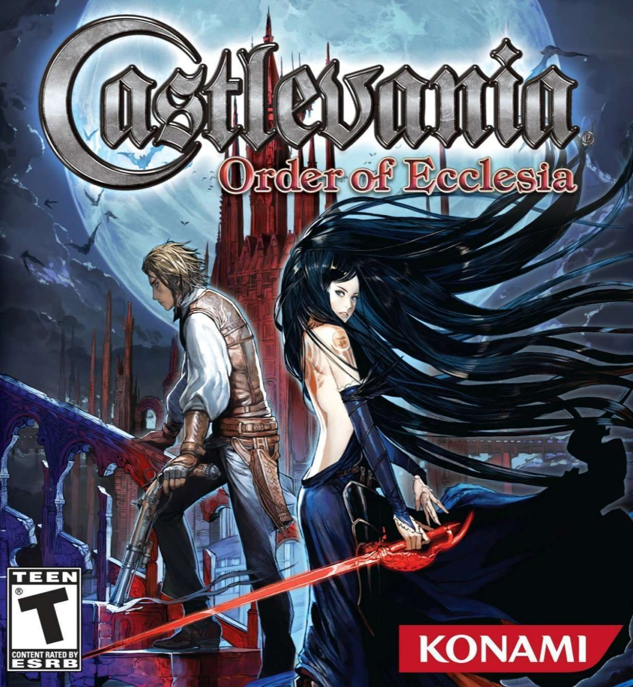
Order of Ecclesia

Judgment

The Adventure ReBirth

The Arcade

Harmony of Despair

Lords of Shadow

Encore of the Night

Mirror of Fate

Lords of Shadow 2

Grimoire of Souls
CASTLEVANIA TIMELINE
THE STORY OF THE MAIN UNIVERSE
This section is arranged according to the fictional chronology of the main Castlevania continuity, rather than the order in which the games were released.
Not every Castlevania release belongs to this continuity. Games such as Haunted Castle, Castlevania Legends and the Lords of Shadow trilogy are therefore kept separate rather than being forced into the main timeline.
1094
Lament of Innocence
1476
Curse of Darkness
 1576
1576
The Adventure
 1591
1591
Belmont's Revenge
 1691
1691
 1698
1698
Simon's Quest
 1748
1748
Harmony of Dissonance
1792
Rondo of Blood
 1797
1797
Symphony of the Night
 Early 19th Century
Early 19th Century
Order of Ecclesia
1917
Bloodlines
1944
Portrait of Ruin
 2035
2035
Aria of Sorrow
 2036
2036
Dawn of Sorrow
The timeline is deliberately separate from the release catalogue. A game may therefore appear in both sections, but its position in each section can be completely different.
LORDS OF SHADOW TIMELINE
A SEPARATE CASTLEVANIA CONTINUITY
The Lords of Shadow games form a separate continuity from the main Castlevania timeline.